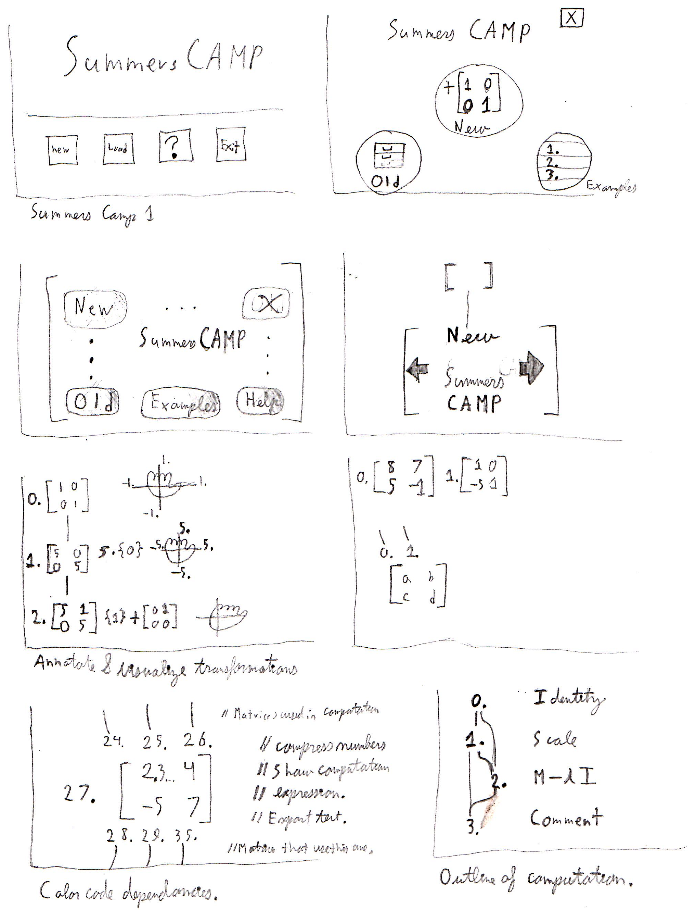

Introduction
The Summers Computer Aided Mathematics Program aims to be a very user friendly way for people to construct mathematical objects and then combine them in operations to create new mathematical objects. I initiated the Summers CAMP project in the summer of 2013 through a Summer Undergraduate Research Fellowship. FIXME : Work on this prose.
Disclaimer
This project was funded by Carnegie Mellon's Undergraduate Research Office. These results represent the views of the author and not those of Carnegie Mellon University.
Under Construction
This documentation is still under construction. In the mean time, you may find more information about previous iterations here.
Sketch
Here is a sketch of some designs for the next iteration of Summers CAMP.
